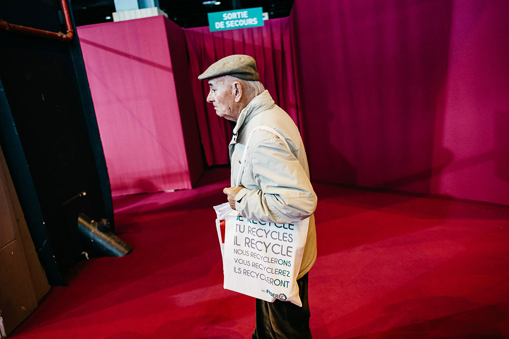
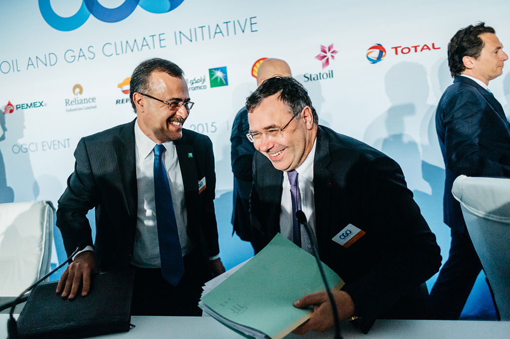
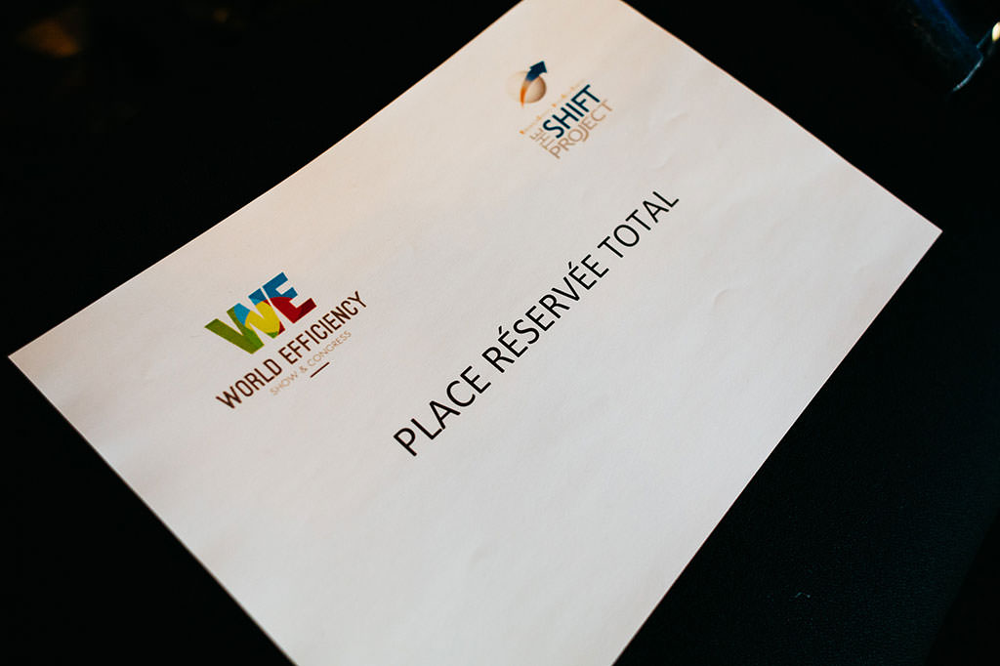

{% set page = { title: "LesJours — Épisode" } %}
{% extends "partials/layout.html" %}

{% block content %}
<article class="obsession-2" role="main">
	<header class="gutter-bottom-6">
		
		<div class="col-md-top-1 col-md-left-1 col-md-5 col-lg-top-1 col-lg-left-2 col-lg-6 snake"></div>
		<div class="container container-no-margin">
			<div class="row">
				<div class="col gutter-sm-4 col-md-left-1 col-md-5 col-lg-left-2 col-lg-6">
					<p class="gutter-top-2 gutter-bottom-2 style-meta">Épisode n°2 de l’obsession <a class="obsession" href="#">Good Com’ bad COP</a></p>
					<h2 class="h2">Le charbon, l’ennemi utile</h2>
					<p>La plupart des entreprises françaises disent se désengager de l’énergie fossile la plus polluante. Des promesses à relativiser, qui leur servent surtout à apparaître irréprochables le temps de la COP.</p>
					<time class="gutter-bottom-2 style-meta" pubdate="2015-11-20T13:50+01:00">20 novembre 2015 • 13h50</time>
					<address class="gutter-bottom-1">
						<ul class="list-inline-dotted style-meta">
							<li>Texte <a href="#">Nicolas Cori</a></li>
							<li>Photos <a href="#">Pierre Morel</a></li>
						</ul>
					</address>
				</div>
			</div>
		</div>
	</header>
	<div class="relative">
		<div class="container no-overflow">
			<div class="row article-container relative">
				<p><span class="lettrine">Q</span>ui aurait dit qu’en 2015, l’abandon du charbon serait la principale mesure mise en avant par les grosses entreprises françaises pour évoquer leur engagement climatique ? Dans un pays qui a fermé sa dernière mine il y a plus de dix ans et où seulement cinq centrales à charbon fonctionnent encore. Et pourtant, de Total à Engie (ex-GDF Suez) en passant par la Société générale et BNP Paribas, c’est le gratin du CAC 40 qui a, quelques mois ou quelques semaines avant le lancement de la COP 21 à Paris, déclaré son désamour pour cette roche sale.</p>

				<p>Voilà donc l’énergie fossile la plus émettrice de CO2 qui se retrouve ostracisée par les patrons, souvent suite aux pressions des pouvoirs publics ou des ONG. Mais il faudrait être bien naïf pour croire que des entreprises qui polluaient – ou contribuaient à la pollution – sont devenues subitement vertueuses.</p>

				<h3>Cession d’actifs</h3>

				<p>Total a été le premier à se présenter comme exemplaire. Dès le 1<sup>er</sup> juin 2015, Patrick Pouyanné, son directeur général, glisse, à la fin d’une conférence de presse où il présente les engagements du groupe envers le climat : <q>Il faut être cohérent. J’ai encore une petite activité de charbon, il faut en sortir.</q> En fait, trois activités sont concernées : la filiale Total Coal South Africa (TCSA), propriétaire de mines et cinquième producteur de charbon sud-africain (qui sera vendue au groupe local Exxaro Resources pour 445 millions d’euros), la filiale CDF Energie (70 millions d’euros de chiffres d’affaires), qui distribue du charbon à des clients industriels en France, ainsi qu’une partie des traders de Total qui spéculent sur cette énergie.</p>

				<p>Tout cela est dérisoire par rapport aux revenus du groupe (178 milliards d’euros en 2014), réalisés principalement par l’extraction, la transformation et la vente de pétrole et de gaz (dont les fameux sables bitumeux canadien en Alberta, considérés comme <q>une catastrophe écologique</q> par Greenpeace). Et la vente des filiales à charbon ne bénéficiera pas au climat, puisque l’activité continuera chez un autre propriétaire.</p>

				<figure>
					
					<figcaption><span>Amin Nasser de Saudi Aramco et Patrick Pouyanné, PDG de Total lors de la Conférence de presse de Oil and Gas Climate Initiative à Paris le 16 octobre 2015 — photo : Pierre Morel pour Les Jours</span></figcaption>
				</figure>

				<p>D’ailleurs, la vente de TCSA n’était pas, à l’origine, motivée par des raisons climatiques. L’opération a été enclenchée dès l’été 2014, et Total expliquait alors qu’elle faisait partie d’un plan général de cession d’actifs destiné à se <q>concentrer sur ses actifs stratégiques</q>. Mais cela permet à Pouyanné de sortir l’argument <q>au fait, j’abandonne le charbon</q> à chaque occasion où il doit parler climat devant un public. </p>

				<p>La semaine du 12 octobre 2015 est un bon exemple de cette stratégie de communication. Le mercredi, le directeur de Total est à l’université Paris-Dauphine pour participer à un débat sur <q>le prix du carbone et l’innovation</q>. Après une tirade sur les <q>acteurs économiques</q> qui <q>sont des gens rationnels</q> et ne peuvent donc pas abandonner du jour au lendemain des activités bénéficiaires, il réussit à glisser que, mine de rien, chez Total, <q>on a arrêté le charbon et on se prive de 100 millions [d’euros] de résultat par an</q>. Comme quoi, le groupe est capable de perdre de l’argent pour le bien de la planète. Mais ça va, il peut se le permettre : Total a gagné 9,7 milliards d’euros en 2014…</p>

				<p>Le lendemain, nouveau débat parisien, cette fois porte de Versailles, dans le cadre du salon World Efficiency, rendez-vous business autour des questions climatiques. Pouyanné fait la publicité du gaz, et tape sur le charbon. <q>D’ailleurs, je suis sorti du charbon, lance-t-il. J’ai pris une position très cohérente parce que je ne peux pas me faire l’avocat du gaz contre le charbon et continuer à gagner de l’argent avec du charbon. J’avais des mines de charbon – oh pas beaucoup ! On avait une activité de trading de charbon, peu connue, mais qui rapportait pas mal d’argent. Et bien les équipes de trading de charbon vont faire du trading de bois et de soufre.</q></p>

				<blockquote>
					<p>La stratégie énergétique dépend des États. C’est à eux de décider s’ils veulent mettre plus ou moins de renouvelable. Le rôle d’Engie est de les accompagner.</p>
					<footer>Anne Chassagnette, directrice de la responsabilité environnementale d’Engie</footer>
				</blockquote>

				<p>Abandonner le charbon est en revanche beaucoup plus compliqué quand sa contribution au chiffre d’affaires est loin d’être marginale. Pour Engie, qui exploite dans le monde une trentaine de centrales à charbon – ce qui représente 15% de l’électricité produite par le groupe –, parvenir à une position publique sur le sujet a pris du temps. Le 28 avril 2015, lors de l’assemblée générale du groupe, une ONG a ainsi demandé à Gérard Mestrallet, le PDG, si un projet de centrale à charbon en Afrique du Sud va voir le jour. Pas de réponse de l’intéressé, qui dit tenir compte avant tout de la <q>préoccupation légitime</q> des gouvernements locaux à donner à leur population <q>un accès à l’énergie</q> avant de se lancer dans la construction d’une centrale à charbon.</p>

				<p>Quelques semaines plus tard, le 3 juin, le patron d’Engie n’est plus pris au dépourvu quand, lors d’une interview à BFM Business, le journaliste Stéphane Soumier lui fait part des critiques de l’ONG Oxfam sur la même centrale sud-africaine. Mestrallet déclare alors fermement que le projet ne se <q>fera pas</q>. Ajoutant : <q>Cela fera peut-être plaisir à Oxfam…</q> Mais rien n’est dit des autres projets. Il faut attendre le 14 octobre pour que la stratégie du groupe face au charbon soit enfin précisée. Mestrallet annonce alors au Figaro que </q>les conditions sont réunies</q> pour qu’Engie prenne la décision, </q>à la fois économique et écologique, de ne plus construire aucune nouvelle centrale à charbon</q>. Le même jour, dans un débat sur l’énergie, il précise son engagement: </q>Le conseil d’administration d’Engie, réuni le week-end dernier à New York, a décidé de faire en sorte que 100% des nouveaux projets soient “zéro CO2” ou à “bas carbone”. Il ne s’agit pas d’une décision émotionnelle : le risque pris est très lourd.</q></p>

				<figure>
					
					<figcaption><span>Au salon World Efficiency en Octobre 2015 à Paris — photo : Pierre Morel pour Les Jours</span></figcaption>
				</figure>

				<p>Pas de quoi crier à un tournant stratégique majeur cependant. Concrètement, le groupe n’abandonne en fait qu’un seul gros projet : la construction d’une centrale d’une capacité de 1320 mégawatts, situé à Yumurtalik, au sud de la Turquie. Dans le même temps, deux projets sur lesquels le groupe est engagé, en Mongolie et au Brésil, se poursuivent. Comme construction déjà engagée de quatre centrales à charbon au Brésil, au Chili, en Inde et au Maroc. Enfin, Engie exclue totalement de se désengager des unités déjà en activité. <q>Il ne nous semble pas responsable vis-à-vis de nos clients d’arrêter des centrales du jour au lendemain dans les pays où nous sommes présents, justifie Anne Chassagnette, directrice de la responsabilité environnementale et sociétale (RSE) du groupe. La stratégie énergétique dépend des États. C’est à eux de décider s’ils veulent mettre plus ou moins de renouvelable. Le rôle d’Engie est de les accompagner.</q>  Sachant que la durée de vie d’une centrale thermique est en moyenne de 50 ans, il faudra du temps pour que le charbon soit vraiment banni d’Engie.</p>

				<h3>Dans les pays riches d’abord</h3>

				<p>Pour les banques qui financent ces projets, la question semble moins centrale en termes d’image. On ne les associe pas immédiatement au charbon. Du coup, leurs dirigeants ne s’expriment pas forcément sur le sujet. Pourtant, à l’automne 2015, aucun des principaux établissements financiers ne manque à l’appel pour publier des communiqués dans lesquels le message principal peut se résumer ainsi : <q><a href="#" data-mini="1">Le charbon et nous, ça fait deux !</a></q></p>

				<figure id="mini-1" class="mini col-md-2 col-lg-3 gutter-lg-0">
					<div class="player">
						<div class="container">
							<audio aria-hidden="true">
								<source type="audio/webm" src="img/episode-2/1.webm" />
								<source type="audio/mp4"  src="img/episode-2/1.m4a" />
							</audio>
							<button class="btn-blank" type="button">
								<div class="container">
									
								</div>
							</button>
						</div>
					</div>
					<a class="link-unstyled" href="#">
						<p class="title">Pouyanné c’est le meilleur</p>
						<p class="subtitle">Interview sur l’oreiller</p>
					</a>
					<figcaption>Captation audio : Mickey</figcaption>
				</figure>

				<p>Le 30 septembre, le Crédit agricole annonce ainsi que <q>dans le contexte des négociations internationales sur le climat et en amont de la COP 21</q>, il a décidé de </q>ne plus financer de nouvelles centrales ou extension de centrales électriques au charbon dans les pays à hauts revenus, tels que définis par la Banque mondiale</q>. Le 15 octobre, Natixis, filiale de BPCE, dit prendre <q>l’engagement de ne plus financer de centrales électriques au charbon et de mines de charbon thermique dans le monde entier, en l’état actuel des technologies</q>. Le 18 novembre, c’est au tour de la Société générale de déclarer un <q>arrêt des financements des projets de développement de mines de charbon</q> et un <q>arrêt des financements de projets de centrales thermiques à charbon dans les pays de l’OCDE à revenus élevés</q>. Enfin, le lendemain, BNP Paribas annonce à son tour qu’il ne financera plus de centrales à charbon dans les pays à hauts revenus.</p>

				<p>Là encore, il faut relativiser ces promesses. Ne plus financer des centrales à charbon dans les pays riches revient à dire qu’on continuera de le faire ailleurs. Mais cet afflux de communiqués a au moins un effet : dans le Parisien ou sur BFM, on titre sur les banques qui tournent le dos au charbon. De quoi arriver à la COP21 bien armé pour faire face aux éventuelles critiques.</p>
			</div>
		</div>
		{# This must be outside of the .article-container otherwise it won't be sticky due to the overflow: hidden #}
		<div class="share col col-md-1 col-lg-2 text-center show" data-fade="3000">
			<ul class="sticky">
				<li class="gutter-bottom-2"><a class="btn" href="#"><i>{{ icon("heart", "Mettre en favoris") }}</i></a></li>
				<li class="gutter-bottom-2"><a class="btn" href="#"><i>{{ icon("gift", "Offrir cet article") }}</i></a></li>
				<li><a class="btn" href="#"><i>{{ icon("plane", "Partager") }}</i></a></li>
			</ul>
		</div>
	</div>
	<footer class="pattern-1">
		<div class="meta container gutter-bottom-2">
			<div class="row style-meta">
				<div class="col gutter-bottom-1 gutter-sm-2 col-md-left-1 col-md-3 gutter-md-left-0 col-lg-left-2 col-lg-6 gutter-lg-left-0">
					<p class="sr">Crédits</p>
					<ul class="list-unstyled">
						<li>Texte <a href="#">Nicolas Cori</a></li>
						<li>Photos <a href="#">Pierre Morel</a></li>
					</ul>
				</div>

				<div class="col gutter-bottom-1 gutter-sm-2 col-md-3 col-lg-left-2 col-lg-8 gutter-lg-left-0">
					<p>Les mots-clés</p>
					<ul class="tags list-unstyled">
						<li><a href="#">Charbon</a></li>
						<li><a href="#">Climat</a></li>
						<li><a href="#">COP21</a></li>
						<li><a href="#">Communication</a></li>
						<li><a href="#">Total</a></li>
						<li><a href="#">Engie</a></li>
						<li><a href="#">BNP Paribas</a></li>
						<li><a href="#">BPCE</a></li>
						<li><a href="#">Société générale</a></li>
					</ul>
				</div>
			</div>
		</div>

		<div class="rel container">
			<p class="sr">D’autres épisodes</p>
			<ul class="row list-unstyled">
				<li class="col col-sm-3 col-md-4 col-lg-4 col-lg-right-4">
					<a class="link-unstyled" rel="prev" href="#">
						<i>{{ icon("angle-left") }}</i>
						<div>
							<span class="style-meta">Épisode n°1<span class="sr"> : </span></span>
							<span class="h5">?</span>
						</div>
					</a>
				</li>
				<li class="col col-sm-1 col-md-4 col-lg-4">
					<a class="link-unstyled" rel="next" href="#">
						<i>{{ icon("angle-right") }}</i>
						<div class="text-right">
							<span class="style-meta">Épisode n°3<span class="sr"> : </span></span>
							<span class="h5">Houille ! Les écolos passent à la banque</span>
						</div>
					</a>
				</li>
			</ul>
		</div>
	</footer>
</article>
{% include "partials/board.html"  %}
{% include "partials/footer.html" %}
{% endblock %}